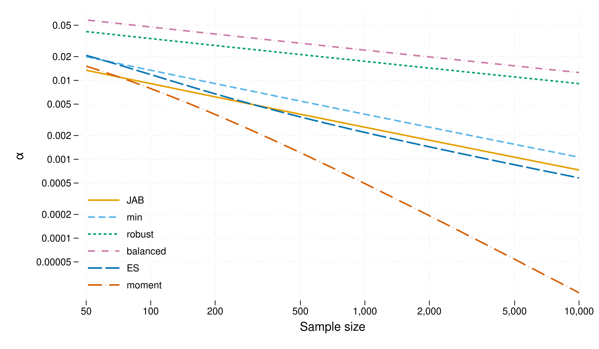

α = f(n)
Set the significance level of a regression coefficient as a function of the sample size, so that a significant result is also evidence for your hypothesis. An R package and a Stata command.
Get started in R Get started in Stata Worked example Shiny app
What it does
Tell alphaN your sample size and how much evidence a significant result should carry, expressed as a Bayes factor, and it returns the significance level to use. It works for the coefficients of linear and generalized linear models, and it converts regression output, t statistics and p-values into Bayes factors under the same prior. The calculations are those of Wulff and Taylor (2024).
If you would rather not write code, the Shiny app does the main calculation in the browser.
Why it exists
A fixed level of .05 means something different in a sample of 100 and in a sample of 100,000. Hold the p-value at .04 and let the sample grow, and Jeffreys’ approximate Bayes factor for the alternative hypothesis goes down:
| Sample size | Bayes factor at p = .04 | Level for BF = 1 | Level for BF = 3 |
|---|---|---|---|
| 100 | 0.82 | .0319 | .0091 |
| 1,000 | 0.26 | .0086 | .0025 |
| 10,000 | 0.08 | .0024 | .0007 |
| 100,000 | 0.03 | .00069 | .00021 |
Below a Bayes factor of 1, the data favor the null hypothesis even though the test rejects it. This is Lindley’s paradox. Letting the level fall with the sample size removes it: the last two columns give the level at which a significant result is at least as likely under the alternative (BF = 1) or three times as likely (BF = 3).
Install
install.packages("alphaN")One call
We are planning a regression on 1,000 observations and want a significant result to be at least moderate evidence for the alternative, a Bayes factor of 3.
After fitting a model, one more call gives the Bayes factor for each coefficient.
What you get
Six calibrations. Four priors for Jeffreys’ approximate Bayes factor, and the effect-size and moment Bayes factors of Klauer, Meyer-Grant and Kellen (2025), which target the effect you care about.
Bayes factors from what you already have. A fitted model, a t statistic, a p-value or an F statistic for a joint test.
The cost in power. Power at the calibrated level, for one design or across sample sizes, so the evidence target and its price are chosen together.
A trace for your preregistration. A short report that records every input, the level, the decision rule and the references to cite.

alphan plot; alphaN_plot() draws the same curves in R.
Where to go from here
Get started in RInstall the package and calibrate a first level. Get started in StataEvery subcommand of alphan, with output. Worked exampleA panel of 18,964 wage observations, in both languages. Choosing a calibrationWhich evidence target, which prior, which sample size. R and Stata side by sideEvery function and option, matched, and how closely the two agree. Shiny appThe main calculation in the browser, without code.
Citation
If you use alphaN, please cite the paper it accompanies.
Wulff, J. N., & Taylor, L. (2024). How and why alpha should depend on sample size: A Bayesian-frequentist compromise for significance testing. Strategic Organization, 22(3), 550–581. https://doi.org/10.1177/14761270231214429
For the effect-size and moment calibrations, please also cite Klauer, K. C., Meyer-Grant, C. G., & Kellen, D. (2025). On Bayes factors for hypothesis tests. Psychonomic Bulletin & Review, 32, 1070–1094. https://doi.org/10.3758/s13423-024-02612-2